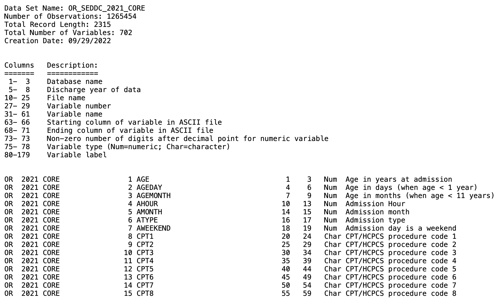
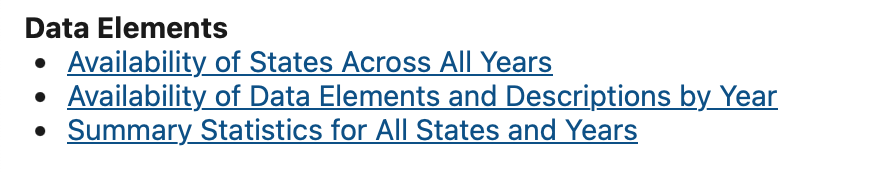
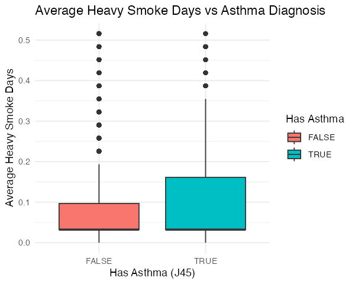
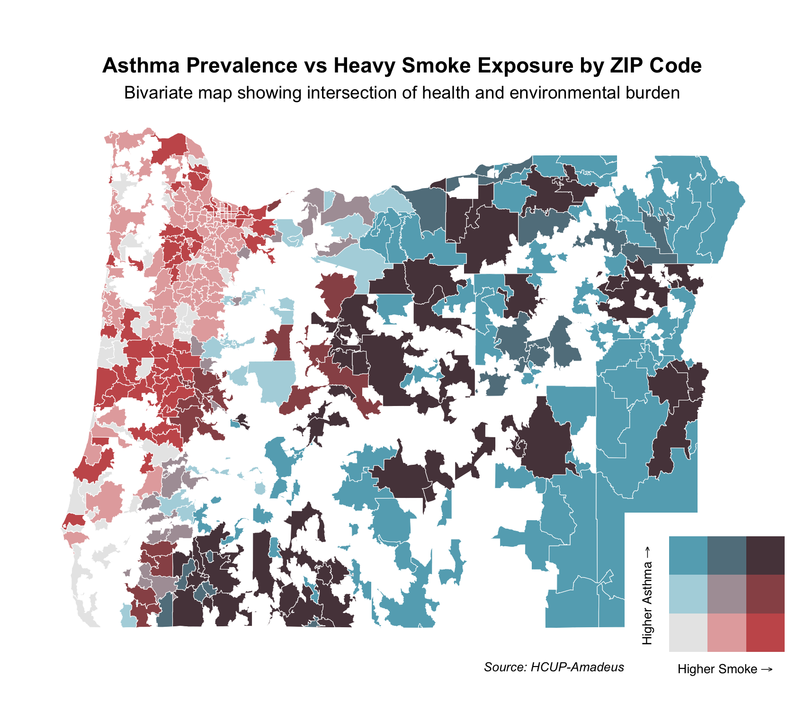

8 HCUP and Amadeus Smoke Plume Use Case


Integrating HCUP databases with Amadeus Exposure data
Date Modified: April 29, 2025
Author: Darius M. Bost
Programming Language: R
8.1 Motivation
Understanding the relationship between external environmental factors and health outcomes is critical for guiding public health strategies and policy decisions. Integrating individual patient records from the Healthcare Cost and Utilization Project (HCUP) with data from environmental datasets allows researchers to examine how elements such as air quality, wildfire emissions, and extreme temperatures impact hospital visits and healthcare utilization patterns.
Ultimately, linking HCUP and environmental exposure data enhances public health monitoring and helps researchers better quantify environmental health risks.
8.3 Data Curation and Prep
HCUP data files from AHRQ can be obtained from their HCUP Central Distributor site where it details the data use aggreement, how to purchase, protect, re-use and share the HCUP data.
Upon acquistion of HCUP database files, you will notice that the state files are distributed as large ASCII text files. These files contain the raw data and can be very large, as they store all of the individual records for hospital stays or procedures. ARHQ provides SAS software tools to assist with loading the data into SAS for analysis, however, this doesn’t help when using other coding languages like R. To solve this we utilize the .loc files (also provided on HCUP website), the year of the data and the type of data file being loaded.
We will start with State level data: State Inpatient Database (SID), State Emergency Department Database (SEDD), and State Ambulatory Surgery and Services Database(SASD).
8.3.1 Read and format HCUP datafiles
We start with defining the years of the data we have as well as the type of data we want to process. There is a core data file that all states have and additional files which may include Diagnosis and Procedure Groups, AHA Linkages, Charges, and/or Severity.
# Define years and data type
years <- 2021
data_type <- "CORE"
# Define possible data sources
data_sources <- "SEDD"# Missing values definition
missing_values <- as.character(quote(c(-99, -88, -66, -99.9999999, -88.8888888,
-66.6666666, -9, -8, -6, -5, -9999,
-8888, -6666, -99999999, -999999999,
-888888888, -666666666, -999, -888,
-666)))
# Loop through data sources
for (data_source in data_sources) {
# Create lowercase version with "c" appended
data_source_lower_c <- paste0(tolower(data_source), "c")
for (year in years) {
# Determine fwf_positions based on the year
# Year 2021 had a slightly different format on the specifications
# at meta_url below
if (year == 2021) {
positions <- readr::fwf_positions(
start = c(1, 5, 10, 28, 32, 64, 69, 73, 75, 80),
end = c(3, 8, 26, 30, 62, 67, 72, 73, 78, NA) # NA for ragged column
)
} else {
positions <- readr::fwf_positions(
start = c(1, 5, 10, 27, 31, 63, 68, 73, 75, 80),
end = c(3, 8, 25, 29, 61, 66, 71, 73, 78, NA) # NA for ragged column
)
} #Ends if statement
# 'data_source in data_sources' and 'year in years' loop continues belowThe fwf_positions() function is utilizing column start and end positions found on the ahrq website (meta_url listed in next code chunk). We use these positions to read in the raw data files from their .asc format.

# Read metadata with adjusted URL
meta_url <- paste0("https://hcup-us.ahrq.gov/db/state/",
data_source_lower_c, "/tools/filespecs/OR_",
data_source, "_", year, "_", data_type, ".loc")
# Skip the first 20 lines because they contain header information and
# descriptions, not column metadata
df <- readr::read_fwf(meta_url, positions, skip = 20)
# Read data
# Set directory to location where HCUP ASCII file was downloaded
# Users should replace "../OR/" with their own download path
data_file <- paste0("../OR/", data_source, "/OR_", data_source, "_",
year, "_", data_type, ".asc")
# fwf_positions are passed column positions from df (file specifications)
# file. Ex. df$X5 has all the column names for our meta_data. See print(df)
# below.
df2 <- readr::read_fwf(
data_file,
readr::fwf_positions(start = df$X6, end = df$X7, col_names = df$X5),
skip = 2,
na = missing_values
)
# Write output CSV
output_file <- paste0("OR_", data_source, "_", year, "_", data_type, ".csv")
write.csv(df2, file = output_file, row.names = FALSE)
} # Ends 'year in years' for loop
} # Ends 'data_source in data_sources' for loop
#Output file: OR_SEDD_2021_CORE.csvWe can test what that our positions are right for reading in raw data by printing df.
print(df)
# A tibble: 702 × 10
# X1 X2 X3 X4 X5 X6 X7 X8 X9 X10
# <chr> <dbl> <chr> <dbl> <chr> <dbl> <dbl> <dbl> <chr> <chr>
# 1 OR 2021 CORE 1 AGE 1 3 NA Num Age in years at…
# 2 OR 2021 CORE 2 AGEDAY 4 6 NA Num Age in days (when…
# 3 OR 2021 CORE 3 AGEMONTH 7 9 NA Num Age in months (wh…
# 4 OR 2021 CORE 4 AHOUR 10 13 NA Num Admission Hour
# 5 OR 2021 CORE 5 AMONTH 14 15 NA Num Admission month
# 6 OR 2021 CORE 6 ATYPE 16 17 NA Num Admission type
# 7 OR 2021 CORE 7 AWEEKEND 18 19 NA Num Admission day is…
# 8 OR 2021 CORE 8 CPT1 20 24 NA Cha CPT/HCPCS procede…
# 9 OR 2021 CORE 9 CPT2 25 29 NA Cha CPT/HCPCS procedu…
# 10 OR 2021 CORE 10 CPT3 30 34 NA Cha CPT/HCPCS procedu…
# ℹ 692 more rows
# ℹ Use `print(n = ...)` to see more rows8.3.2 Confirming data Characteristics
We now have or CSV formatted file OR_SEDD_2021_CORE.csv. We can check summary statistics for our data by going to HCUP databases page here.
To get to the summary table for our data we do the following:
Click on the link for SEDD.
Next we find the section on Data Elements

From here we want to select
Summary Statistics for All States and Years. This will redirect us to a page that allows the selection of our database attributes (state, year, database choice)Lastly we select the file we’re interested in. In our example we downloaded the CORE file so that summary table will look like this.
8.4 Downloading and Processing Exposure Data with the amadeus Package
This section provides a step-by-step guide to downloading and processing wildfire smoke exposure data using the amadeus package. The process includes retrieving Hazard Mapping System (HMS) smoke plume data, spatially joining it with ZIP Code Tabulation Areas (ZCTAs) for Oregon, and calculating summary statistics on smoke density.
8.4.1 Step 1: Define Time Range
The first step is to specify the date range for which we want to download wildfire smoke exposure data.
8.4.2 Step 2: Download HMS Smoke Plume Data
Using the amadeus::download_hms() function, we download HMS smoke plume data in shapefile format within the specified time range. The data will be saved in a local directory.
8.4.3 Step 3: Load Oregon ZIP Code Spatial Data
To analyze smoke exposure by geographic location, we retrieve ZCTA boundaries for Oregon using the tigris package.
8.4.4 Step 4: Process HMS Data
Once the raw HMS data is downloaded, we process it using process_hms(). This function cleans and filters the data based on the given time range and geographic extent (Oregon ZCTAs).
8.4.5 Step 5: Extract Smoke Plume Values at ZIP Code Locations
Using calculate_hms(), we extract wildfire smoke plume values at the ZIP code (ZCTA) level. This function returns a data frame containing locs_id, date, and a binary variable for wildfire smoke plume density.
temp_covar <- calculate_hms(
covariate = "hms", # Specify the covariate type
from = cov_h, # Use the processed HMS data
locs = or, # Use Oregon ZIP code bounds
locs_id = "ZCTA5CE10", # Define ZIP code identifier
radius = 0, # No buffer radius
geom = "sf" # Return as an sf object
)
# Save processed data
saveRDS(temp_covar, "smoke_plume_covar.R")glimpse(temp_covar)
# Rows: 12,989
# Columns: 16
# $ STATEFP10 <chr> "41", "41", "41", "41", "41", "41", "41", "41", "41", "…
# $ ZCTA5CE10 <chr> "97833", "97840", "97330", "97004", "97023", "97042", "…
# $ GEOID10 <chr> "4197833", "4197840", "4197330", "4197004", "4197023", …
# $ CLASSFP10 <chr> "B5", "B5", "B5", "B5", "B5", "B5", "B5", "B5", "B5", "…
# $ MTFCC10 <chr> "G6350", "G6350", "G6350", "G6350", "G6350", "G6350", "…
# $ FUNCSTAT10 <chr> "S", "S", "S", "S", "S", "S", "S", "S", "S", "S", "S", …
# $ ALAND10 <dbl> 228152974, 295777905, 199697439, 113398767, 330220870, …
# $ AWATER10 <dbl> 0, 10777783, 814864, 71994, 2345079, 85543, 58021, 9206…
# $ INTPTLAT10 <chr> "+44.9288886", "+44.8847111", "+44.6424890", "+45.25496…
# $ INTPTLON10 <chr> "-118.0148791", "-116.9184395", "-123.2562655", "-122.4…
# $ PARTFLG10 <chr> "N", "N", "N", "N", "N", "N", "N", "N", "N", "N", "N", …
# $ time <dttm> 2021-07-01, 2021-07-01, 2021-07-01, 2021-07-01, 2021-0…
# $ light_00000 <dbl> 0, 0, 0, 0, 0, 0, 0, 0, 0, 0, 0, 0, 0, 0, 0, 0, 0, 0, 0…
# $ medium_00000 <dbl> 0, 0, 0, 0, 0, 0, 0, 0, 0, 0, 0, 0, 0, 0, 0, 0, 0, 0, 0…
# $ heavy_00000 <dbl> 0, 0, 0, 0, 0, 0, 0, 0, 0, 0, 0, 0, 0, 0, 0, 0, 0, 0, 0…
# $ geometry <MULTIPOLYGON [°]> MULTIPOLYGON (((-118.1575 4..., MULTIPOLYG…In preparation for the next section we are going to make two new dataframes from our temp_covar object. The first collapses our zipcodes taking the average of light, medium, or heavy days.
avg_smoke_density <- temp_covar %>%
group_by(ZCTA5CE10) %>%
summarise(
avg_light = mean(light_00000, na.rm = TRUE),
avg_medium = mean(medium_00000, na.rm = TRUE),
avg_heavy = mean(heavy_00000, na.rm = TRUE),
)
print(avg_smoke_density)
saveRDS(avg_smoke_density, "smoke_density_avg_byZip.R")
# > head(avg_smoke_density)
# # A tibble: 6 × 4
# ZCTA5CE10 avg_light avg_medium avg_heavy
# <fct> <dbl> <dbl> <dbl>
# 1 97833 0.129 0.194 0.419
# 2 97840 0.161 0.226 0.387
# 3 97330 0.290 0.129 0.0323
# 4 97004 0.258 0.0968 0.0323
# 5 97023 0.194 0.0968 0.0323
# 6 97042 0.258 0.129 0.0323The second dataframe also groups by our zip but takes the summation of the smoke plume days instead of an average. We will keep the geometry with this dataframe as we will want to keep it for our merger later on. If we kept it for both dataframes, we would have repeating columns after our hcup/amadeus merge.
total_smoke_density <- temp_covar %>%
group_by(ZCTA5CE10) %>%
summarise(
sum_light = sum(light_00000, na.rm = TRUE),
sum_medium = sum(medium_00000, na.rm = TRUE),
sum_heavy = sum(heavy_00000, na.rm = TRUE),
geometry = st_union(geometry)
)
print(total_smoke_density)
saveRDS(total_smoke_density, "smoke_density_total_byZip.R")
# > head(total_smoke_density)
# # A tibble: 6 × 5
# ZCTA5CE10 sum_light sum_medium sum_heavy geometry
# <fct> <int> <int> <int> <GEOMETRY [°]>
# 1 97833 4 6 13 MULTIPOLYGON (((-118.1571 44.9990,…
# 2 97840 5 7 12 POLYGON ((-116.9899 44.88256, -116…
# 3 97330 9 4 1 POLYGON ((-123.1829 44.64559, -123…
# 4 97004 8 3 1 POLYGON ((-122.4867 45.22209, -122…
# 5 97023 6 3 1 POLYGON ((-122.0758 45.10881, -122…
# 6 97042 8 4 1 POLYGON ((-122.5842 45.20546, -122…8.5 Data Analysis using HCUP and Amadeus data sources
First we will load in our hcup data file we processed earlier and subset the file to a set of observations that make the data easier to work with (702 to 39 columns) and are still interesting for analysis. This includes zipcodes (ZIP), age at admission (AGE), admission month (AMONTH), race identifier (RACE), sex (FEMALE), and ICD 10 diagnosis codes (I10_).
or_sedd_2021 <- fread("OR_SEDD_2021_CORE.csv")
subset_data <- or_sedd_2021 %>%
select(FEMALE, ZIP, PSTCO, AGE, RACE, AMONTH, starts_with("I10_"))
head(subset_data)
# [1] "FEMALE" "ZIP" "PSTCO"
# [4] "AGE" "RACE" "AMONTH"
# [7] "I10_DX_Visit_Reason1" "I10_DX_Visit_Reason2" "I10_DX_Visit_Reason3"
# [10] "I10_DX1" "I10_DX2" "I10_DX3"
# [13] "I10_DX4" "I10_DX5" "I10_DX6"
# [16] "I10_DX7" "I10_DX8" "I10_DX9"
# [19] "I10_DX10" "I10_DX11" "I10_DX12"
# [22] "I10_DX13" "I10_DX14" "I10_DX15"
# [25] "I10_DX16" "I10_DX17" "I10_DX18"
# [28] "I10_DX19" "I10_DX20" "I10_DX21"
# [31] "I10_DX22" "I10_DX23" "I10_DX24"
# [34] "I10_DX25" "I10_DX26" "I10_DX27"
# [37] "I10_DX28" "I10_NDX" "I10_PROCTYPE"Next we will select July as our month of interest to further reduce the size of the data and to focus on a time frame where we know fires took place in Oregon. We will also load in our environmental data files we made above from amadeus.
# subset data to July
july_subset_hcup_data <- subset_data[subset_data$AMONTH == 7, ]
# load in amadeus files we made previously
avg_smoke_density <- readRDS("smoke_density_avg_byZip.R")
total_smoke_density <- readRDS("smoke_density_total_byZip.R")8.5.1 Merging Environmental Data with Hospital Data
We will now merge our environmental data into our hospital discharge (HCUP) data using an inner join on ZIP codes present in both datasets.
# Perform an inner join to merge `july_subset_hcup_data` with
# `avg_smoke_density` based on the ZIP code (`ZIP` in HCUP data and
# `ZCTA5CE10` in smoke density data)
merged_data <- inner_join(july_subset_hcup_data, avg_smoke_density,
by = c("ZIP" = "ZCTA5CE10"))
# Perform another inner join to add `total_smoke_density` to the existing
# `merged_data`
merged_data <- inner_join(merged_data, total_smoke_density,
by = c("ZIP" = "ZCTA5CE10"))8.5.2 Identifying Asthma Cases
Next, we will identify individuals diagnosed with asthma. This involves searching for the ICD-10 code “J45” within the diagnosis columns of our dataset.
# Identify the columns containing diagnosis codes (prefix "I10_")
diag_columns <- grep("^I10_", colnames(merged_data), value = TRUE)
# Create a new column `has_asthma` that checks if any diagnosis contains "J45"
smoke_summary <- merged_data %>%
mutate(has_asthma = apply(select(., all_of(diag_columns)), 1, function(x) {
any(grepl("J45", x))
}))
# Count total number of individuals in the dataset
total_individuals <- nrow(smoke_summary)
# Count the number of individuals with an asthma diagnosis
asthma_cases <- sum(smoke_summary$has_asthma, na.rm = TRUE)
# Calculate the proportion of individuals diagnosed with asthma
asthma_prevalence <- asthma_cases / total_individuals8.5.3 Visualizing the Relationship Between Heavy Smoke Exposure and Asthma
We will now generate a boxplot to visualize the distribution of average heavy smoke days across individuals with and without an asthma diagnosis.
ggplot(smoke_summary, aes(x = factor(has_asthma), y = avg_heavy,
fill = factor(has_asthma))) +
geom_boxplot() +
labs(
x = "Has Asthma (J45)",
y = "Average Heavy Smoke Days",
fill = "Has Asthma",
title = "Average Heavy Smoke Days vs Asthma Diagnosis"
) +
theme_minimal()
8.5.4 Bivariate Map Analysis: Asthma and Heavy Smoke Exposure
The code below producess a bivariate map for spatial analysis of asthma prevalence and heavy smoke exposure across ZIP codes in Oregon. Using hospital discharge data HCUP and NOAA’s HMS smoke plume data, ZIP-level asthma rates were calculated and paired with the average number of heavy smoke days over the same time period.
# Load additional libraries
library(biscale)
library(cowplot)
# Recall we have identified diagnosis columns
head(diag_columns)
# Recall our smoke summary dataframe
head(smoke_summary)
# Summarize asthma rate and heavy smoke exposure by ZIP code
zip_summary <- smoke_summary %>%
group_by(ZIP) %>%
summarize(
asthma_rate = mean(has_asthma, na.rm = TRUE),
avg_heavy_smoke = mean(sum_heavy, na.rm = TRUE)
)
# Recall ZIP code shapefile (ZCTA) for Oregon
head(or)
# Join spatial and summary data
map_data <- left_join(or, zip_summary, by = c("ZCTA5CE10" = "ZIP"))
# Filter out missing values
map_data_clean <- map_data %>%
filter(!is.na(asthma_rate) & !is.na(avg_heavy_smoke))
# Apply bivariate classification
map_data_clean <- bi_class(map_data_clean, x = asthma_rate,
y = avg_heavy_smoke, style = "quantile", dim = 3)
# Create the main map
map <- ggplot() +
theme_void(base_size = 14) +
geom_sf(data = map_data_clean, aes(fill = bi_class), color = "white",
size = 0.1, show.legend = FALSE) +
bi_scale_fill(pal = "GrPink", dim = 3) +
labs(
title = "Asthma Prevalence vs Heavy Smoke Exposure by ZIP Code",
subtitle = "Bivariate map showing intersection of health and environmental
burden",
caption = "Source: HCUP-Amadeus & NOAA HMS Smoke Data"
) +
theme(
plot.title = element_text(hjust = 0.5, face = "bold"),
plot.subtitle = element_text(hjust = 0.5),
plot.caption = element_text(size = 10, face = "italic", hjust = 1),
plot.margin = margin(10, 20, 10, 20)
)
# Create the legend
legend <- bi_legend(
pal = "GrPink",
dim = 3,
xlab = "Higher Smoke",
ylab = "Higher Asthma",
size = 10,
flip_axes = FALSE,
rotate_pal = FALSE
)
# Combine map and legend
final_plot <- ggdraw() +
draw_plot(map, 0, 0, 1, 1) +
draw_plot(legend, 0.77, 0.05, 0.2, 0.2)
# Display the final plot
final_plot
Each ZIP code is shaded based on the intersection of these two variables using a 3x3 quantile classification. The bivariate color scale in the legend shows increasing smoke exposure along the x-axis (red) and increasing asthma prevalence along the y-axis (blue):
Dark red areas: High smoke exposure, low asthma prevalence
Dark blue areas: High asthma prevalence, low smoke exposure
Dark purple areas: High asthma and high smoke — indicating areas with compounded health and environmental burdens
Light gray areas: Low on both dimensions
This bivariate map helps identify regions where environmental and health vulnerabilities intersect and can inform targeted public health responses.
8.5.5 Logistic Regression Analysis
Finally, we fit a logistic regression model to examine the relationship between asthma diagnoses and exposure to different levels of smoke density.
# Fit a logistic regression model with asthma diagnosis as the outcome variable
# and different smoke exposure levels as predictors
model <- glm(has_asthma ~ avg_light + avg_medium + avg_heavy,
data = smoke_summary, family = binomial)
# Display model summary
summary(model)
# Call:
# glm(formula = has_asthma ~ avg_light + avg_medium + avg_heavy,
# family = binomial, data = smoke_summary)
#
# Coefficients:
# Estimate Std. Error z value Pr(>|z|)
# (Intercept) -3.38823 0.09077 -37.329 < 2e-16 ***
# avg_light -0.21258 0.30322 -0.701 0.483
# avg_medium 1.74996 0.32456 5.392 6.98e-08 ***
# avg_heavy 1.82572 0.16826 10.850 < 2e-16 ***
# ---
# Signif. codes: 0 ‘***’ 0.001 ‘**’ 0.01 ‘*’ 0.05 ‘.’ 0.1 ‘ ’ 1
#
# (Dispersion parameter for binomial family taken to be 1)
#
# Null deviance: 42004 on 111124 degrees of freedom
# Residual deviance: 41674 on 111121 degrees of freedom
# AIC: 41682
#
# Number of Fisher Scoring iterations: 6The output provides estimates for each predictor, helping us assess the impact of light, medium, and heavy smoke exposure on asthma prevalence.